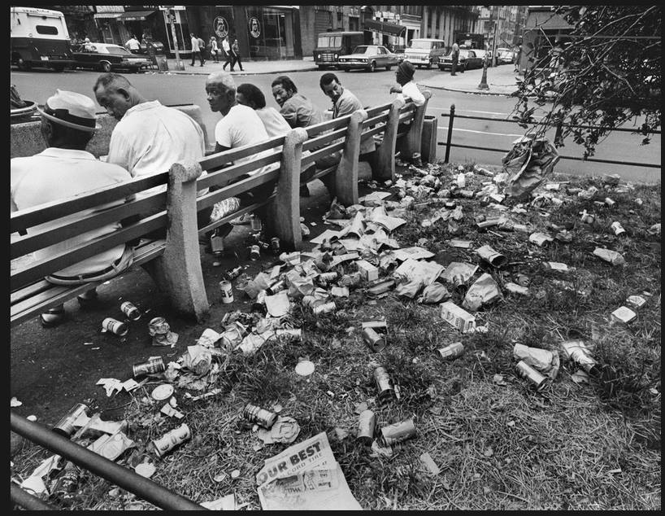
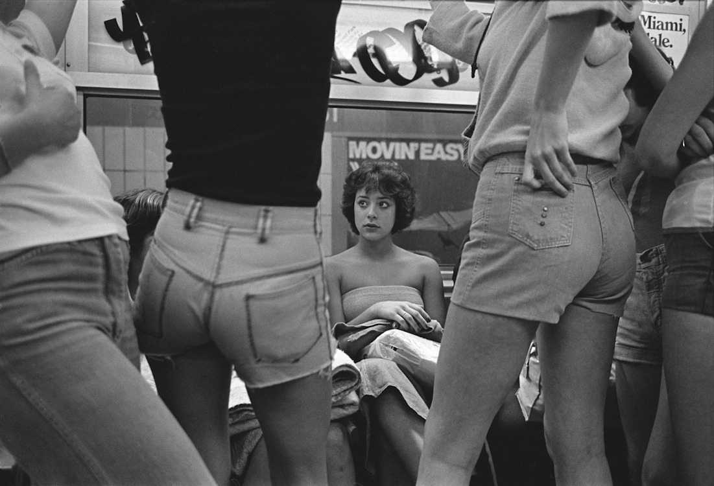

A Police fan, 1983
A Police fan, 1983
The Fillmore East, summer of 1970

Bus getting towed, Atlantic Ave, 1978

Bus ride, 1980
Friends on the 2, 1980
SS motoring through the weeds, 1981

2 train, 1979.

So 90s

Lower East Side car wash, 1976
Little dude has seen some shit.

Jackhammers on Park Ave and 41st, 1970s
Halloween on Central Park West, 1966
A brisk day outside the Carnegie Deli, Seventh Avenue and 55th Street, 1989

Shopping outside NYU, 1980s

Some next-level shit happening in Brooklyn, 1985

Art on the beach, 1984
No, I’m not buying any of your dirty water. But dig those 70s/80s sweat socks.

Rare sighting of a Carvel street cart, 1982. Disc-O-mat and Beefsteak Charlie’s in the background.
Yours is a REALLY great and unique blog! Thanks for putting it up!
Best regards,
C
Hey, thanks! Cheers
What street is the tallest building being built on
The Street of Dreams

Park Ave near 81st Street, 1979

Broadway median, 1969. Or maybe a landfill in Staten Island.

25th Street, 1978

Souvlaki outside the Terminal Deli in Soho, 1985

Horoscopes by phone. Midtown, 1978.

Commuting on the 4
On line for the movies, 1974. Broadway and 67th.

New York City 1971 - Avenue of the Americas by Gentle***Giant on Flickr.

1978 shorts

1985 in the Garment District

Ernest Cole New York City c.1971
Let’s use Hare Krishnas to scare Jessica to death! (Or annoy her, at least.)
Early 80s graffiti

Adorama Camera on 34th Street, 1982

Going to Coney Island, 1980
5 train at the Morris Park station in the Bronx, 1985